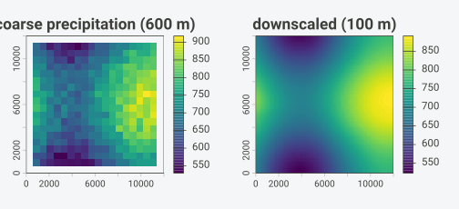
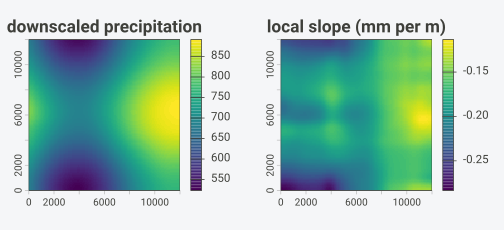
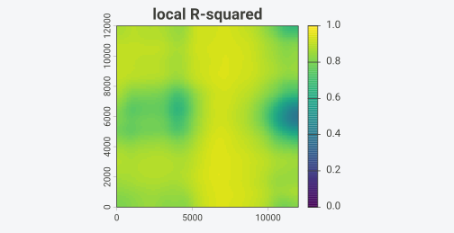
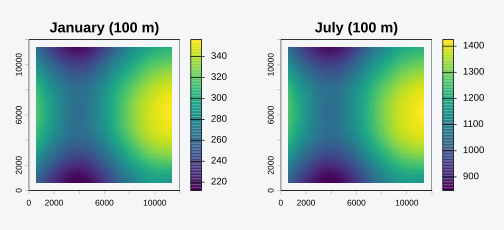
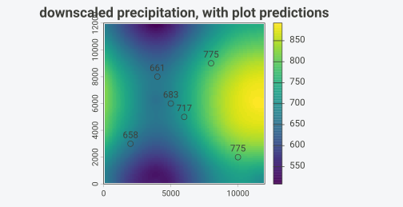

A coarse climate grid tells you the precipitation over a 600 m cell.
A digital elevation model tells you the terrain at 100 m.
topocast joins the two: it learns how the coarse variable
tracks the terrain, locally, and rewrites the coarse grid at the
resolution of the elevation model. The relationship is fit once per
neighborhood with a moving-window regression, and the cost does not grow
with the window size.
This vignette downscales a synthetic precipitation field, adds a second terrain predictor, carries a short time series, and drops down to the matrix engine that does the work.
Installation
# install.packages("pak")
pak::pak("gcol33/topocast")A landscape to downscale
We need a fine-resolution terrain and a coarse climate observation. We build the terrain at 100 m as a smooth surface, then aggregate elevation to a 600 m grid to stand in for a coarse product. Precipitation is observed only on that coarse grid.
set.seed(1)
fine <- rast(nrows = 120, ncols = 120,
xmin = 0, xmax = 12000, ymin = 0, ymax = 12000,
crs = "EPSG:32632")
xy <- crds(fine)
elev_fine <- setValues(fine, 1200 + 600 * sin(xy[, 1] / 2500) +
400 * cos(xy[, 2] / 2000))
names(elev_fine) <- "elev"
slope_fine <- terrain(elev_fine, v = "slope", unit = "degrees")
names(slope_fine) <- "slope"The coarse grid is the same landscape at 600 m, six fine cells to a side.
elev_coarse <- aggregate(elev_fine, fact = 6, fun = "mean")
slope_coarse <- aggregate(slope_fine, fact = 6, fun = "mean")Precipitation falls with elevation and rises on steeper ground, with noise that the terrain does not explain. We observe it on the coarse grid only.
prec_coarse <- 900 - 0.18 * elev_coarse + 4 * slope_coarse +
setValues(elev_coarse, rnorm(ncell(elev_coarse), 0, 20))
names(prec_coarse) <- "prec"The response and its predictors go into one SpatRaster,
so they share a grid by construction. The fine predictors go into a
second raster on the target grid.
coarse <- c(prec_coarse, elev_coarse, slope_coarse)
terrain <- c(elev_fine, slope_fine)
coarse
#> class : SpatRaster
#> size : 20, 20, 3 (nrow, ncol, nlyr)
#> resolution : 600, 600 (x, y)
#> extent : 0, 12000, 0, 12000 (xmin, xmax, ymin, ymax)
#> coord. ref. : WGS 84 / UTM zone 32N (EPSG:32632)
#> source(s) : memory
#> names : prec, elev, slope
#> min values : 529.303613, 203.183895, 1.281186
#> max values : 918.058795, 2192.634046, 17.237889One predictor
A single call downscales the coarse precipitation onto the fine
elevation. The formula names the response and the predictor; both names
must be layers of coarse, and the predictor must also be a
layer of onto.
fine_prec <- topocast(prec ~ elev, data = coarse, onto = terrain, radius = 4)
fine_prec
#> class : SpatRaster
#> size : 120, 120, 1 (nrow, ncol, nlyr)
#> resolution : 100, 100 (x, y)
#> extent : 0, 12000, 0, 12000 (xmin, xmax, ymin, ymax)
#> coord. ref. : WGS 84 / UTM zone 32N (EPSG:32632)
#> source(s) : memory
#> name : prec
#> min value : 523.348712
#> max value : 891.435878The result is a 120 by 120 grid where the coarse input was 20 by 20. Plotting the two side by side shows where the detail comes from: the coarse field sets the broad level, the elevation carries the texture.
op <- par(mfrow = c(1, 2), mar = c(2, 2, 2, 4))
plot(prec_coarse, main = "coarse precipitation (600 m)")
plot(fine_prec, main = "downscaled (100 m)")
par(op)The radius is measured in coarse cells. A radius of 4
means each regression sees a 9 by 9 window of coarse cells, here a 5.4
km neighborhood. Inside that window topocast fits one
intercept and one slope, then resamples those coefficients to the fine
grid and evaluates intercept + slope * elev at every fine
cell.
Several predictors
Naming more layers adds predictors. Each one is matched by name
between data and onto, so layer order does not
matter and a missing layer is an error rather than a silent
mismatch.
fine_prec2 <- topocast(prec ~ elev + slope, data = coarse, onto = terrain,
radius = 4)A misnamed predictor stops the call and lists what is available, which saves a debugging session over a quietly wrong raster.
topocast(prec ~ elev + aspect, data = coarse, onto = terrain, radius = 4)
#> Error in `resolve_predictors()`:
#> ! predictor `aspect` named in `formula` is in neither `data` nor `onto`.
#> data layers: prec, elev, slope
#> onto layers: elev, slopeSeveral responses at once
Climate work rarely stops at one variable. Precipitation and
temperature share the same terrain, so they share the moving-window
design. Naming them together on the left-hand side with
cbind() fits all of them in one pass: the window
cross-products that make up the design are built and factored once, then
solved against each response, so a second response costs little more
than the first.
tmin_coarse <- 8 - 0.006 * elev_coarse +
setValues(elev_coarse, rnorm(ncell(elev_coarse), 0, 0.5))
names(tmin_coarse) <- "tmin"
climate <- c(prec_coarse, tmin_coarse, elev_coarse, slope_coarse)
both <- topocast(cbind(prec, tmin) ~ elev + slope, data = climate, onto = terrain,
radius = 4)
both
#> class : SpatRaster
#> size : 120, 120, 2 (nrow, ncol, nlyr)
#> resolution : 100, 100 (x, y)
#> extent : 0, 12000, 0, 12000 (xmin, xmax, ymin, ymax)
#> coord. ref. : WGS 84 / UTM zone 32N (EPSG:32632)
#> source(s) : memory
#> names : prec, tmin
#> min values : 508.60264, -5.410624
#> max values : 892.19583, 6.666107The result carries one layer per response, named for it, and each layer matches the single-response call. The shared design saves the repeated fitting, not the numbers. The valid-cell mask is complete-case across the responses: a coarse cell enters a window only where every response and predictor is finite.
The one-DEM shortcut
The common case has one coarse climate layer and one fine elevation
model, and no coarse predictor in hand. A predictor named in the formula
but absent from data is derived from onto by
aggregating it to the response grid, so the coarse elevation does not
have to be built by hand.
shortcut <- topocast(prec ~ elev + slope, data = prec_coarse, onto = terrain,
radius = 4)Here data is the coarse precipitation alone;
elev and slope are aggregated from
terrain to the coarse grid with aggregate, the
cell average by default, before the fit. The downscaled field reproduces
the explicit-predictor result to resampling tolerance.
Mapping the local relationship
The reason to downscale by regression rather than by interpolation is
the local relationship between the response and the terrain.
coefficients = TRUE returns that relationship as grids: the
fitted layer, the intercept, and one slope per predictor, all on the
fine grid.
grids <- topocast(prec ~ elev, data = coarse, onto = terrain, radius = 4,
coefficients = TRUE)
names(grids)
#> [1] "prec" "(Intercept)" "elev"
op <- par(mfrow = c(1, 2), mar = c(2, 2, 2, 4))
plot(grids[["prec"]], main = "downscaled precipitation")
plot(grids[["elev"]], main = "local slope (mm per m)")
par(op)The slope layer is the local precipitation lapse rate. Where it is steep, elevation explains most of the variation in precipitation; where it is near zero, the terrain carries little signal and the downscaled field stays close to the coarse input.
Where the fit is strong
How much of the response the terrain actually explains varies across
the map. diagnostics = TRUE returns three grids, carried
onto the fine grid: r.squared, the coefficient of
determination of each window fit; residual.sd, the residual
standard deviation of the fit in the response’s own units; and
n.valid, the count of valid coarse cells the window held.
High r.squared marks where the terrain relationship is
tight and the downscaling adds real detail; low values mark where the
fitted field rests mostly on the coarse level. n.valid
tells apart a low r.squared because the window barely had
enough cells to fit from one because the relationship is genuinely noisy
there; with several responses it is one shared grid, not one per
response, since the valid-cell mask is complete-case across them.
fit_quality <- topocast(prec ~ elev + slope, data = coarse, onto = terrain,
radius = 4, diagnostics = TRUE)
names(fit_quality)
#> [1] "prec" "r.squared" "residual.sd" "n.valid"
plot(fit_quality[["r.squared"]], main = "local R-squared", range = c(0, 1))
A time series
Climate downscaling usually means many time steps sharing one terrain
relationship. Passing a stack of coarse periods as anomaly
fits the baseline once and carries each period onto it. Use
type = "ratio" for non-negative variables such as
precipitation and type = "additive" for variables such as
temperature.
jan <- prec_coarse * 0.4
jul <- prec_coarse * 1.6
months <- c(jan, jul)
names(months) <- c("jan", "jul")
series <- topocast(prec ~ elev + slope, data = coarse, onto = terrain,
radius = 4, anomaly = months, type = "ratio")
nlyr(series)
#> [1] 2The baseline climatology is downscaled with the regression; each
period is then the fine baseline scaled by that period’s coarse anomaly.
The ratio path guards a zero baseline by returning NA
rather than dividing by zero.
op <- par(mfrow = c(1, 2), mar = c(2, 2, 2, 4))
plot(series[["jan"]], main = "January (100 m)")
plot(series[["jul"]], main = "July (100 m)")
par(op)Points and other spatial classes
A common target is a set of locations instead of a full grid:
vegetation plots, weather stations, survey sites. Passing those points
as onto evaluates the fitted relationship at each one and
returns the points with a prediction column. The points carry the fine
predictors as attributes; here they are read from the elevation
model.
library(sf)
#> Linking to GEOS 3.14.1, GDAL 3.12.1, PROJ 9.7.1; sf_use_s2() is TRUE
plots <- st_as_sf(
data.frame(x = c(2000, 4000, 6000, 8000, 10000, 5000),
y = c(3000, 8000, 5000, 9000, 2000, 6000)),
coords = c("x", "y"), crs = "EPSG:32632")
at_terrain <- terra::extract(terrain, vect(plots))
plots$elev <- at_terrain$elev
plots$slope <- at_terrain$slope
at_plots <- topocast(prec ~ elev + slope, data = coarse, onto = plots, radius = 4)
at_plots
#> Simple feature collection with 6 features and 3 fields
#> Geometry type: POINT
#> Dimension: XY
#> Bounding box: xmin: 2000 ymin: 2000 xmax: 10000 ymax: 9000
#> Projected CRS: WGS 84 / UTM zone 32N
#> geometry elev slope prec
#> 1 POINT (2000 3000) 1676.9474 14.449248 657.9065
#> 2 POINT (4000 8000) 1530.3309 8.444084 661.3340
#> 3 POINT (6000 5000) 1281.9755 12.323577 717.4466
#> 4 POINT (8000 9000) 1058.9375 17.128046 775.1305
#> 5 POINT (10000 2000) 962.6333 12.706625 775.3137
#> 6 POINT (5000 6000) 1346.0137 6.239848 683.3556The fit at a point is the coarse coefficients interpolated to the location and applied to the point’s predictors, the same regression the grid path evaluates per cell. Overlaying the points on the downscaled field shows the two agree.
pv <- vect(plots)
plot(fine_prec2, main = "downscaled precipitation, with plot predictions")
plot(pv, add = TRUE, pch = 21, cex = 1.3)
text(crds(pv), labels = round(at_plots$prec), pos = 3, cex = 0.8)
The same call returns a plain data frame of coordinates and
predictions with output = "data.frame", for joining back to
a plot table.
topocast(prec ~ elev + slope, data = coarse, onto = plots, radius = 4,
output = "data.frame")
#> x y prec
#> 1 2000 3000 657.9065
#> 2 4000 8000 661.3340
#> 3 6000 5000 717.4466
#> 4 8000 9000 775.1305
#> 5 10000 2000 775.3137
#> 6 5000 6000 683.3556Gridded inputs are not tied to SpatRaster either. A
Raster* object from the raster package or a
stars object is accepted for data and
onto, and the result is returned in the class it was given;
output requests another. The class sets only the container
for the result, and the numbers are the same.
The matrix engine
topocast() is a terra workflow over a matrix engine,
window_regression(), which fits the moving-window
regression on plain numeric matrices and returns the intercept and slope
grids. It is useful for testing and for callers who already hold their
data as matrices.
y <- as.matrix(prec_coarse, wide = TRUE)
x <- list(as.matrix(elev_coarse, wide = TRUE),
as.matrix(slope_coarse, wide = TRUE))
fit <- window_regression(y, x, radius = 4)
str(fit, max.level = 2)
#> List of 5
#> $ intercept : num [1:20, 1:20] 823 794 881 854 889 ...
#> $ slope :List of 2
#> ..$ : num [1:20, 1:20] -0.164 -0.154 -0.184 -0.179 -0.188 ...
#> ..$ : num [1:20, 1:20] 7.57 8.33 5.85 7.11 5.71 ...
#> $ r_squared : num [1:20, 1:20] 0.863 0.89 0.91 0.908 0.911 ...
#> $ residual_sd: num [1:20, 1:20] 18.2 16.5 16.1 16.7 17 ...
#> $ n_valid : num [1:20, 1:20] 16 20 24 28 32 36 36 36 36 36 ...The elevation slope recovers the coefficient we simulated. Over a window that spans most of the grid the local fit converges on the global value.
big <- window_regression(y, x, radius = 19)
round(median(big$slope[[1]], na.rm = TRUE), 3) # simulated -0.18
#> [1] -0.178Practical guidance
A few choices shape the result.
Radius. The window sets how local the relationship is. A small radius lets the slope vary across the map but needs enough valid cells to fit; with two predictors a window must hold at least three cells, and more for a stable fit. A large radius approaches a single global regression. Start near the scale over which you expect the climate-terrain relationship to be stationary, often a few to a couple dozen coarse cells.
Resampling method. The coefficient grids are
resampled to the fine grid with method, defaulting to
"cubicspline". Cubic spline gives smooth coefficient
surfaces; "bilinear" is a safer choice when the
coefficients are noisy and you want to avoid overshoot.
Degenerate windows. A cell returns NA
when its window has fewer valid cells than the model needs, when a
predictor has no spread (min_variance), or when the design
is singular. min_cells raises the valid-cell requirement
above the bare minimum if you want a margin.
Collinear predictors. Over a small extent,
precipitation and elevation can be nearly collinear, which makes the
local slope unstable even though the fit succeeds. This is a property of
the data, not a defect; widen the window, drop a predictor, or inspect
the slope grid (via coefficients = TRUE) for noise.
Deriving the coarse predictor. When a predictor is
named in the formula but is not a layer of data, it is
aggregated from onto to the response grid with
aggregate, a cell average by default. Set it to another
[terra::resample()] method if a different aggregation suits the
predictor.
Clamping extreme terrain. The downscaled field is a
regression surface, so where the fine predictor reaches values the
coarse window never saw, the local slope keeps extrapolating linearly.
clamp = TRUE bounds the result to the observed range of the
coarse response, a guard against runaway values at extreme elevation.
The r.squared grid from diagnostics = TRUE
shows where such a fit is weak in the first place.
What the output conserves. The downscaled field is a
regression surface evaluated on the fine predictors. Averaging it back
to the coarse grid does not reproduce the coarse input exactly, because
the coarse residual is not carried. The anomaly path is
what restores fidelity to the coarse values over time: each period’s
coarse anomaly is carried verbatim onto the fine baseline.
Coordinate systems. data and
onto should share a coordinate reference system. Two
systems with the same EPSG code are treated as equal even when their WKT
strings differ, which is common with cross-source lon/lat data such as a
DEM and a climate product from different providers. A genuine mismatch
is an error that names both systems.
See vignette("how-it-works", package = "topocast") for
the summed-area-table method behind the constant per-cell cost.